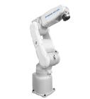

品牌 | YASKAWA |  | |
型号 | MOTOMAN-MH5F | ||
构造 | 垂直多关节型（6个自由度） | ||
最大负载 | 5kg | ||
重复定位精度 | ±0.02mm | ||
水平可达距离 | 706mm | ||
控制柜 | MOTOMAN-FS100 | ||
动作范围 | S 轴（旋 转） | -170゜ ~ +170゜ | |
L 轴（下 臂） | -65゜ ~ +155゜ | ||
U 轴（上 臂） | -136゜ ~ +255゜ | ||
R 轴（手腕旋转） | -190゜ ~ +190゜ | ||
B 轴（手腕摆动） | -120゜ ~ +120゜ | ||
T 轴（手腕回转） | -360゜ ~ +360゜ | ||
最大速度 | S 轴（旋 转） | 376゜/s | |
L 轴（下 臂） | 350゜/s | ||
U 轴（上 臂） | 400゜/s | ||
R 轴（手腕旋转） | 450゜/s | ||
B 轴（手腕摆动） | 450゜/s | ||
T 轴（手腕回转） | 720゜/s | ||
本体重量 | 27 kg | ||
电源规格 | 200-600v,50/60Hz | ||
额定功率 | 1.0kVA | ||